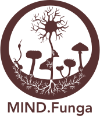

Termos de uso da curadoria
Versão 1.0 — vigente desde 27/07/2026
Este texto explica o que se espera de quem participa da curadoria do MIND.Funga. Ele complementa os Termos e Condições e a Política de Privacidade do aplicativo, que continuam valendo para você como para qualquer usuário.
1. O que é a curadoria
O MIND.Funga recebe fotos de fungos enviadas por qualquer pessoa e sugere uma espécie usando um modelo de inteligência artificial. Essa sugestão é um palpite: pode estar errada. O curador é quem olha a submissão e decide se a identificação está correta, corrige quando sabe a espécie certa, ou reprova quando o material não permite concluir nada.
A decisão do curador é o que fica registrado no aplicativo. Ela alimenta a base de dados da pesquisa e pode, no futuro, ser usada para treinar novas versões do modelo. Um erro seu não fica só naquela foto: ele se propaga.
2. Compromissos de quem faz curadoria
- Identificar apenas dentro do que você conhece. Ninguém domina todos os grupos de fungos. Diante de uma foto duvidosa, de um grupo que você não estuda ou de material insuficiente, deixe sem confirmar. Não confirmar é uma resposta legítima e prevista; chutar não é.
- Basear a decisão no material enviado. Use as fotos, o substrato e a localização informados. Se faltar informação para concluir, a submissão não deve ser validada.
- Assumir que a sua decisão é pública. Quem enviou a foto — e quem consultar o aplicativo depois — vai ler a sua validação como a resposta certa. Trate cada validação como uma afirmação sua.
- Não usar a curadoria em benefício próprio ou de terceiros. A posição de curador não deve ser usada para se promover, para favorecer pessoa, empresa, instituição ou linha de pesquisa, nem para obter vantagem sobre outros usuários.
- Respeitar quem enviou. As mensagens trocadas com os usuários fazem parte do trabalho: responda com educação, mesmo quando a identificação sugerida estiver muito errada. Muita gente que envia está aprendendo.
- Não prestar orientação sobre consumo. O MIND.Funga não diz se um fungo é comestível, medicinal ou tóxico, e a curadoria não é canal para esse tipo de conselho. Confirmar uma espécie nunca é autorização para alguém comer, colher ou usar nada.
- Manter os seus dados de contato atualizados enquanto for curador, para que a equipe consiga falar com você.
3. Cuidado com o material dos usuários
Ao fazer curadoria, você tem acesso a fotos, coordenadas de localização e mensagens enviadas por outras pessoas. Esse material é de pesquisa e dos usuários — não é seu.
- Não republique, não repasse e não divulgue esse conteúdo fora do MIND.Funga sem autorização da coordenação do projeto.
- Trate a localização com cuidado especial: ela pode indicar a propriedade ou a rotina de quem enviou, e em alguns casos aponta populações de espécies sensíveis à coleta.
- Não use os contatos dos usuários para assuntos alheios à curadoria.
4. Uso do seu telefone
Para completar a solicitação, pedimos um telefone com DDD. Ele serve para a equipe falar com você sobre a curadoria: esclarecer uma dúvida do seu pedido, combinar a orientação inicial, ou avisar de algo urgente em uma identificação.
O telefone não aparece para outros usuários, não é usado para divulgação e não é compartilhado com terceiros. Os detalhes estão na Política de privacidade da curadoria.
5. Análise do pedido
Cada solicitação é analisada por uma pessoa da equipe. Levamos em conta o perfil informado no cadastro, a experiência declarada e o histórico de contribuições no aplicativo. Não há prazo garantido de resposta, e o projeto pode recusar uma solicitação sem que isso signifique qualquer juízo sobre a pessoa — a equipe de curadoria é pequena por escolha.
Um pedido recusado pode ser refeito mais adiante, com mais histórico de contribuição.
6. A curadoria é revisável e pode ser encerrada
A coordenação do projeto pode rever qualquer validação feita por um curador, corrigir o que estiver errado e encerrar o acesso de curador quando estes compromissos não forem cumpridos — por exemplo, em caso de validações reiteradamente incorretas, uso indevido do material dos usuários ou conduta desrespeitosa.
Você também pode deixar a curadoria quando quiser: basta avisar a equipe. Perder ou deixar o acesso de curador não afeta a sua conta de usuário, que continua funcionando normalmente.
7. Natureza da participação
A curadoria é voluntária e ligada a um projeto de pesquisa da Universidade Federal de Santa Catarina. Não gera vínculo empregatício, remuneração, bolsa nem qualquer obrigação de dedicação mínima. Você contribui no ritmo que puder.
8. Mudanças neste texto
Se estas regras mudarem, a nova versão é publicada nesta mesma página, com número de versão e data, e os curadores são avisados por e-mail.
9. Dúvidas
Fale com a equipe pelo e-mail mind.funga.app@gmail.com.
← Voltar para a solicitação de curadoria